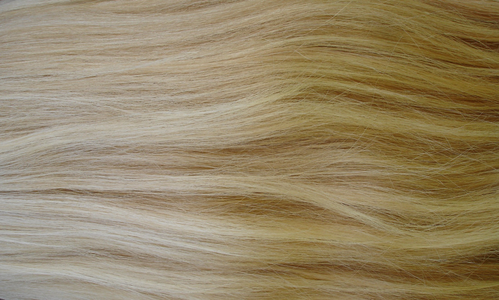
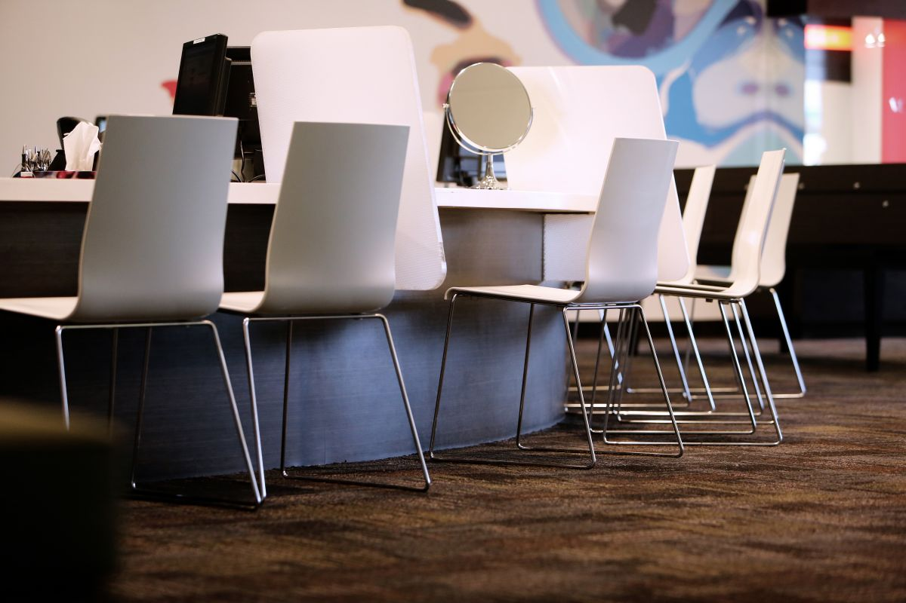
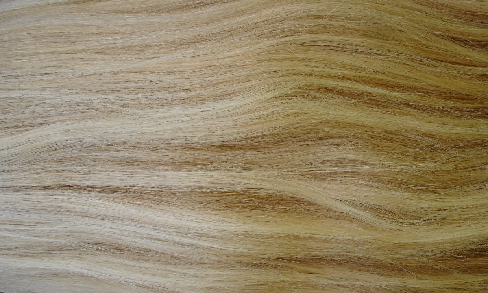

01
Corte y peinado
Corte, secado, peinado para un evento.
Villarrica · Vicente Reyes 753
Centro de belleza y peluquería. Ciento cuarenta y seis personas dejaron su reseña, y acá se contestan todas.
01 — Pedir hora
Pedir hora por mensaje siempre termina igual: «hola» — «hola, ¿para qué servicio?» — «color» — «¿cuál es tu largo?» — y así diez veces. Acá se llena una vez, se copia y se manda armado. Nada de esto sale de esta página: se copia a su teléfono y usted decide por dónde enviarlo.
Su mensaje, listo para copiar
Hola, quiero pedir hora. Complete la ficha de arriba y el mensaje se arma solo acá.
Esta ficha es una demostración: no envía nada a ninguna parte y no guarda lo que usted escribe. Sólo arma el texto en su propio teléfono para que lo pegue donde quiera. En la versión definitiva puede mandarse directo a WhatsApp, si el salón confirma que ese número lo recibe.
Ciento cuarenta y seis
reseñas. Contestadas
una por una.
02 — Qué hacemos
01
Corte, secado, peinado para un evento.
02
Raíz, mechas, iluminación, cambios de tono. Es lo que más tiempo toma y lo que más conviene conversar antes.
03
Hidratación y recuperación, sobre todo después de un proceso de color.
Lista de ejemplo: agrupa lo habitual de un centro de belleza. El detalle real —qué servicios hay, cuáles no, y si se hacen uñas, maquillaje o depilación— lo define el salón. No se puso ninguno que no se pudiera confirmar.

Lo que toma tiempo
Un color bien hecho
no se apura.
03 — Por qué esas preguntas
Nada de esto reemplaza la conversación con su estilista: es para llegar a ella con la mitad del camino hecho.
04 — El salón


05 — Contacto
Para el equipo de Salón Guapas
Es el tiempo. Con ciento cuarenta y seis reseñas contestadas una por una, ya sabemos que acá alguien se sienta a escribir. Si además cada hora se agenda por mensaje directo, esa persona está gastando su día en «hola, ¿para qué servicio?».
La ficha de esta página no reemplaza la conversación: la empieza en el punto cinco en vez del punto uno. Esa es toda la propuesta.